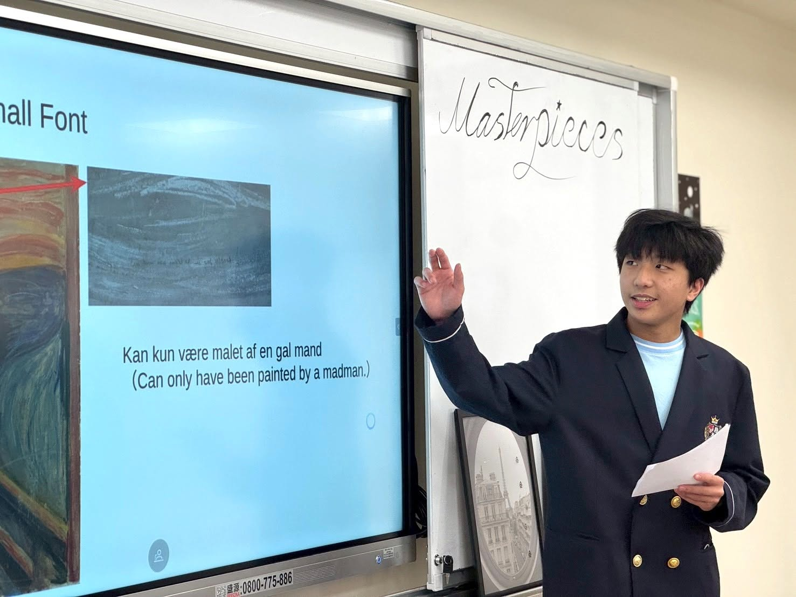
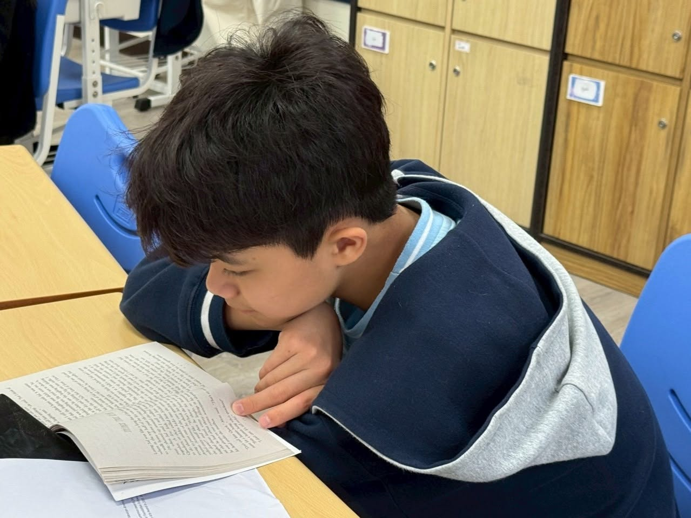
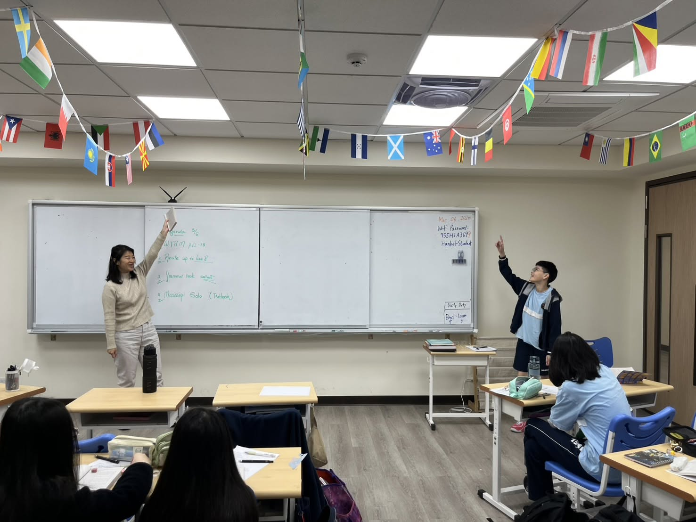
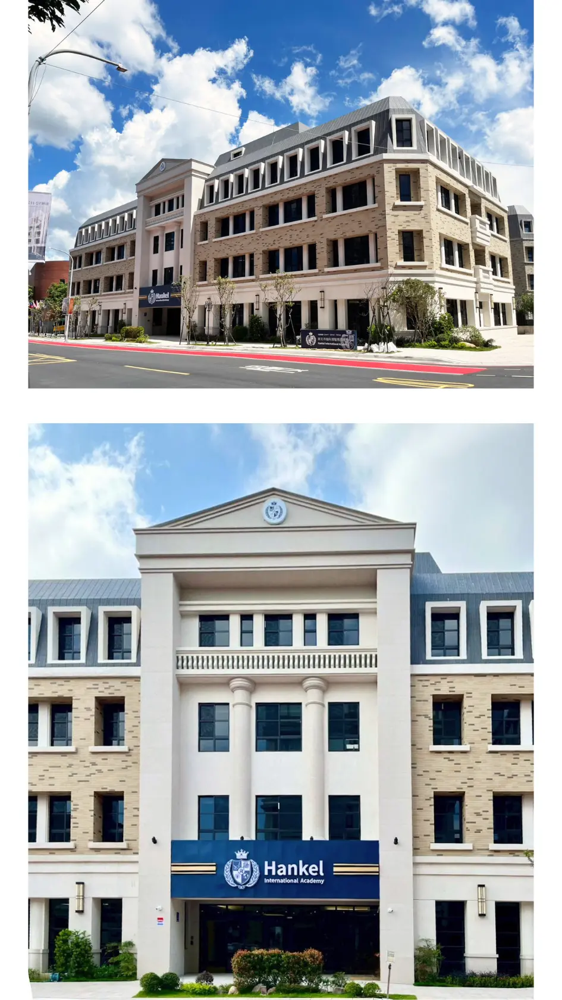
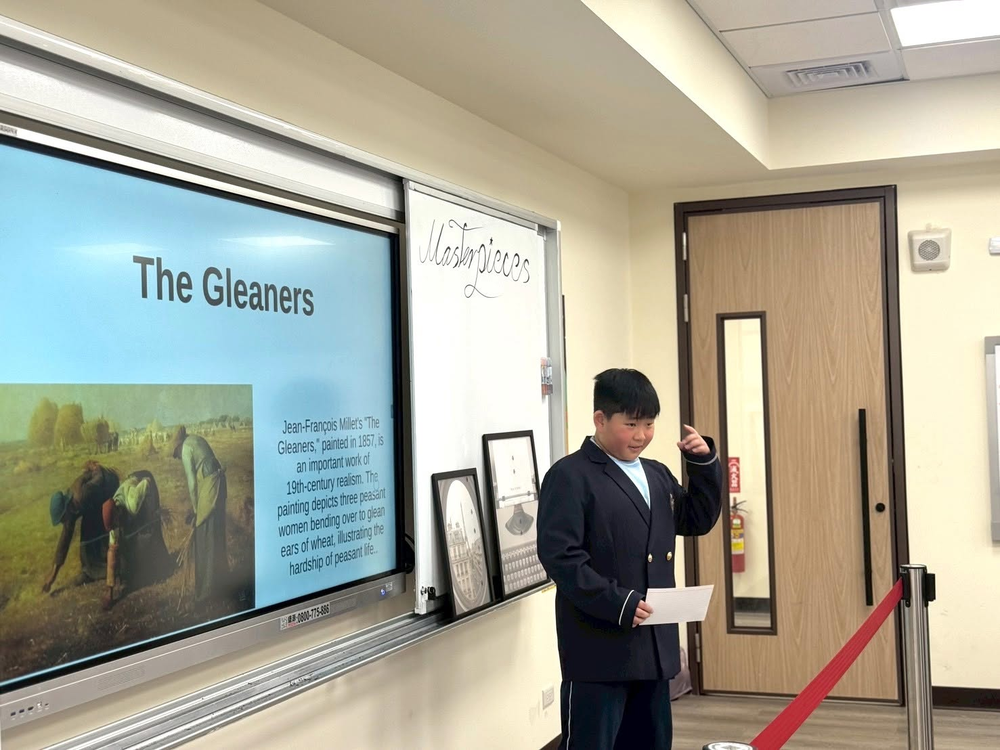
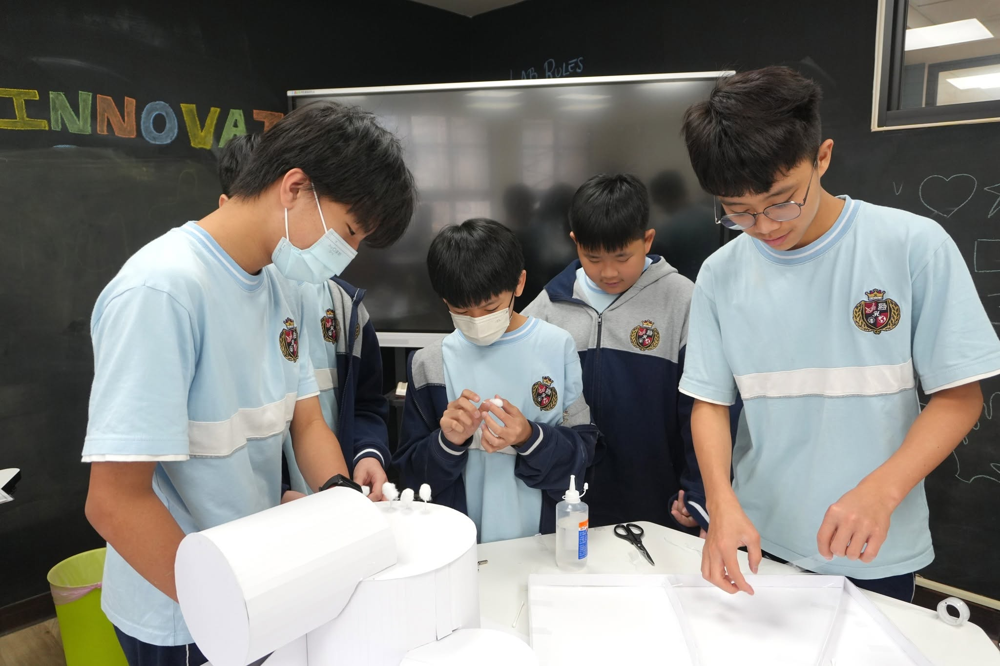
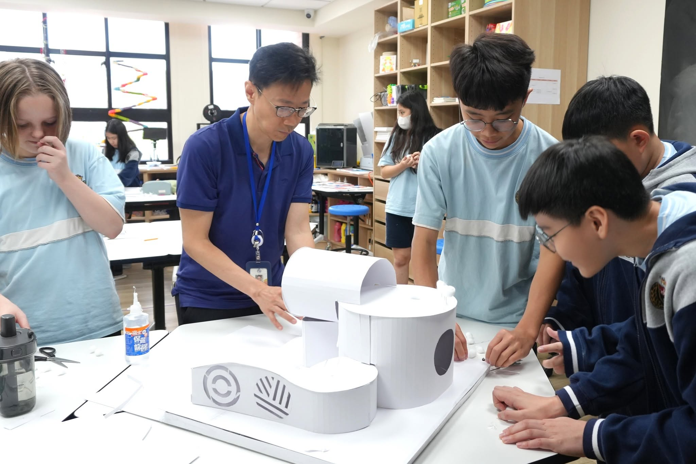
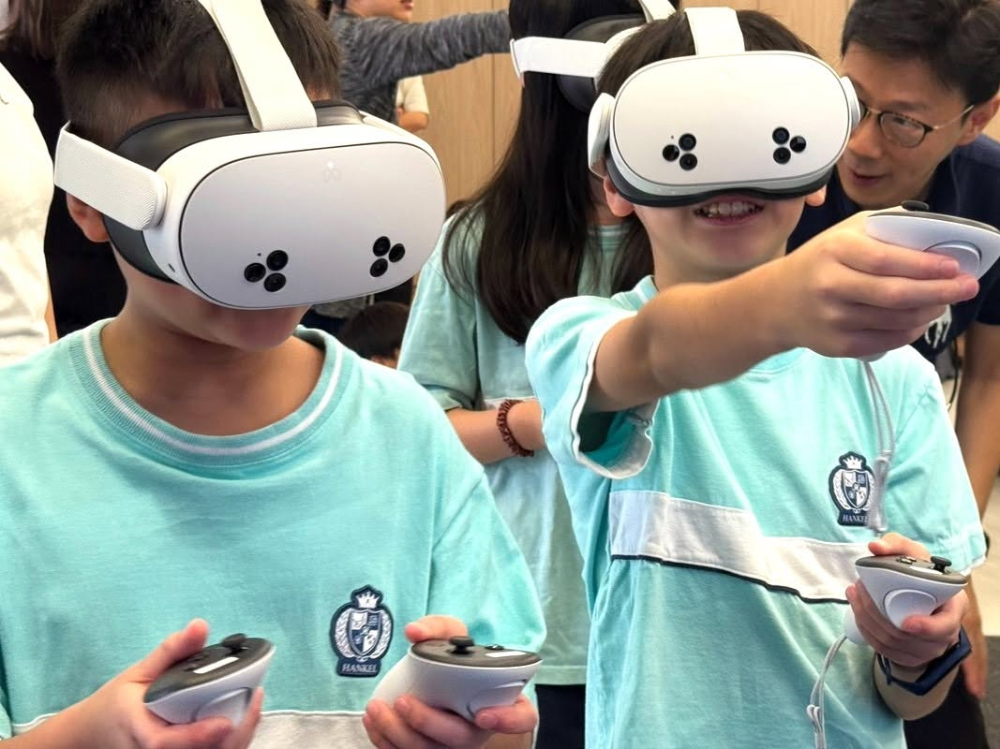

01
孵育好奇心
INCUBATING CURIOSITY從真實情境提問，讓孩子從「老師要我學」走向「我想知道更多」。

Think · Choose · Create
國中三年，是孩子從「吸收知識」走向「形成觀點」的關鍵期。翰科實驗中學以多語、科研與遊藝為根基，陪伴孩子學會思考、合作、表達與實踐，為未來建立帶得走的能力。
七年級新生｜八、九年級轉學生（依當年度正式招生資格調整）


Why Middle School Matters
當 AI 能快速搜尋、整理，甚至生成答案，孩子真正需要建立的，是判斷資訊、提出好問題、整合知識並付諸行動的能力。
學科知識不是終點，而是理解世界、形成觀點與解決問題的工具。
孩子在適切的挑戰中找到節奏，逐步成為能為選擇負責的學習者。

Our Commitment
我們想培養的，不只是會考試的學生，而是能面對未來、創造未來的人。
三十多年來，從科技產業、企業經營到教育實踐，我愈來愈確信：一個社會真正的競爭力來自人才，而人才的養成始於教育。
知識取得愈來愈容易，獨立思考、同理關懷、團隊合作、創新實踐，以及面對未知的勇氣與韌性，反而更加珍貴。
因此，翰科不只關注孩子今天學會多少，更在意他能否自在地運用中英文與世界溝通、善用科技卻不被科技主導、勇敢探索未知，也願意關懷他人。
Four Growth Engines
翰科中學四大成長引擎，讓孩子不只是學會知識，也逐步看見自己的優勢與可能。
從真實情境提問，讓孩子從「老師要我學」走向「我想知道更多」。

透過跨學科專題與設計思考，把創意轉化為可以實踐的方案。

在閱讀、研究與表達中，強化批判思考、問題解決與決策能力。

在團隊任務中練習溝通協作、時間管理，並學習承擔責任。
Learning System
五大教育倡議，連結現在的學習與未來的能力。科技是學習夥伴，孩子仍是思考與選擇的主體。

從記憶走向閱讀、理解、推理、表達與應用。
以教師觀察與學習資料，提供符合個別需求的支持與挑戰。
透過五科閱讀、PBL 與 Innovation Lab，串連知識、回應真實問題。
善用 AI 與數位工具，練習查證、比較、提問與判斷。
在雙語課程與跨文化經驗中，建立理解世界與自信表達的能力。
Multilingual · Science · Arts
語言不只是考科，更是理解差異、組織觀點，並與世界溝通的橋樑。

從觀察、提問、研究到實作，建立證據意識、邏輯思維與解決問題的能力。
透過藝術、音樂、運動與團隊活動，培養創造力、品味、同理心與穩定身心。
A Place to Grow
翰科林口校區以明亮、現代且具啟發性的空間，承接孩子從學科學習到實驗、創作、運動與交流的多元需求。
讓進度較快的孩子有延伸空間，也讓需要協助的孩子獲得及時引導。
從明亮教室、實驗室到藝文與運動空間，讓多元學習真實發生。
透過家長會談、Coffee Hour 與教育分享，共同理解孩子、陪伴成長。
Admissions Information Session